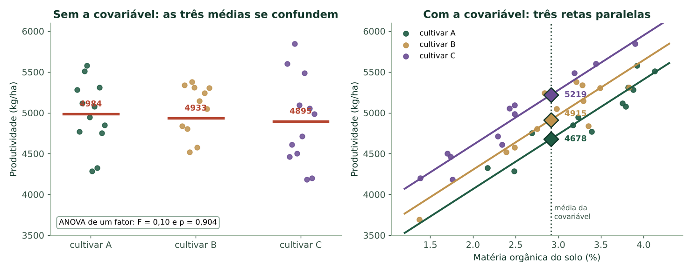
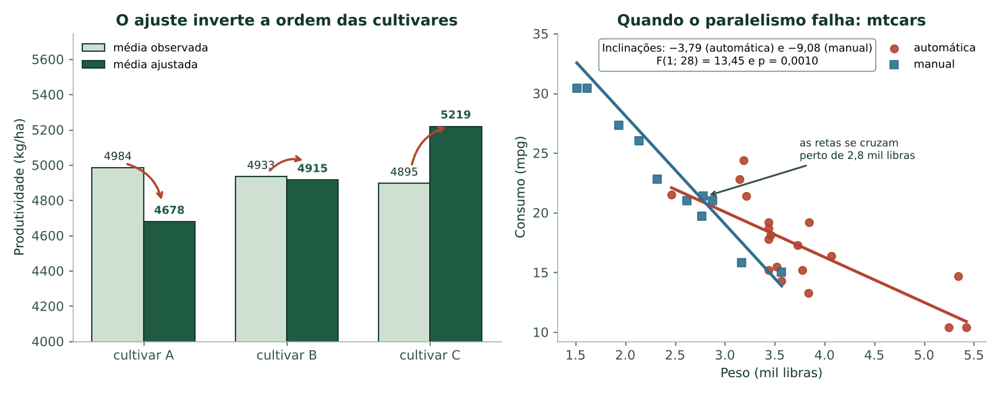

ANCOVA
Compara médias de grupos descontando o efeito de uma covariável contínua medida antes do tratamento, ganhando precisão e corrigindo desequilíbrios.
Comece por aqui
Experimentos de campo raramente são homogêneos. Parcelas diferem em fertilidade, pacientes diferem em gravidade inicial, alunos diferem em conhecimento prévio. Quando existe uma variável contínua medida antes do tratamento e relacionada à resposta, ignorá-la custa caro: ela engorda o erro experimental e, se por azar estiver desequilibrada entre os grupos, distorce a comparação. A ANCOVA faz as duas correções de uma vez.
Sem a covariável, as três cultivares têm médias de 4984, 4933 e 4895 kg/ha e a ANOVA devolve p = 0,904: nada. Com a covariável, as médias ajustadas passam a 4678, 4915 e 5219 kg/ha, a ordem se inverte e o teste devolve p = 6,6 × 10⁻⁷. A mesma colheita, duas conclusões opostas.
O que é a ANCOVA
O modelo acrescenta à ANOVA um termo linear na covariável \(x\). Isso equivale a comparar os grupos não pelas médias observadas, mas pelas médias que eles teriam se todos tivessem partido do mesmo valor da covariável — por convenção, a média geral dela. Geometricamente: ajustam-se retas paralelas, uma por grupo, e o que se compara são as distâncias verticais entre elas.

As parcelas sortearam solos diferentes: a cultivar A caiu em solo com 3,37% de matéria orgânica em média, e a C em solo com 2,43%. Como cada ponto percentual vale cerca de 671 kg/ha, a cultivar A recebeu uma vantagem de solo de aproximadamente 630 kg/ha — suficiente para mascarar sua inferioridade genética. A ANCOVA devolve a cada cultivar o solo médio e, com isso, as separa.
Pressupostos e como verificá-los
| Pressuposto | Por que importa | Como verificar |
|---|---|---|
| Paralelismo das retas (homogeneidade das inclinações) | Sem ele, não existe uma única “diferença ajustada”. | Ajuste o modelo com interação e teste o termo covariável:grupo. |
| Relação linear entre covariável e resposta | O ajuste é feito por uma reta. | Diagrama de dispersão por grupo; resíduos contra a covariável. |
| A covariável é medida antes do tratamento, ou não é afetada por ele | Ajustar por algo que o tratamento alterou remove parte do próprio efeito. | Protocolo do estudo. Este é um erro conceitual, não detectável nos dados. |
| Observações independentes | Indispensável. | Delineamento. |
| Resíduos normais, com variância constante | Como em qualquer modelo linear. | Q-Q e resíduos contra valores ajustados. |
| Covariável medida sem erro apreciável | Erro de medida atenua o coeficiente e deixa o ajuste incompleto. | Confiabilidade do instrumento. |
| Sobreposição das faixas da covariável entre os grupos | Fora da sobreposição, a comparação é extrapolação. | tapply(x, grupo, range). |
O paralelismo é testável em uma linha de código e é frequentemente esquecido. Se as inclinações diferem, a diferença entre os grupos depende do valor da covariável, e relatar um único número ajustado esconde o fenômeno em vez de descrevê-lo. A seção do exemplo mostra um caso real em que isso ocorre.
Hipóteses e estatística de teste
Primeiro testa-se o pressuposto; só então a hipótese de interesse:
Em que:
- \(y_{ij}\)
- resposta da unidade j no grupo i
- \(x_{ij}\)
- valor da covariável nessa unidade
- \(\bar{x}\)
- média geral da covariável
- \(\tau_i\)
- efeito do grupo i, já ajustado
- \(\beta\)
- inclinação comum a todos os grupos
- \(\bar{y}_{i(\text{aj})}\)
- média ajustada do grupo i
- \(N-k-1\)
- graus de liberdade do resíduo: um a menos que na ANOVA, por causa de β
Exemplo numérico, passo a passo
O modelo com interação deixa resíduo \(SQ=895\,399{,}29\) em 30 gl; o de retas paralelas, \(SQ=915\,258{,}20\) em 32 gl.
As inclinações estimadas são 614,78, 690,96 e 696,29 kg/ha por ponto percentual: próximas o bastante. O modelo de retas paralelas está autorizado.
Com só a covariável no modelo, o resíduo é \(SQ=2\,227\,888{,}67\); acrescentando a cultivar, cai para \(915\,258{,}20\). A diferença, \(1\,312\,630{,}47\), é a soma de quadrados do efeito ajustado, com 2 gl, e \(QM_{\text{res}}=915\,258{,}20/32=28\,601{,}82\):
A inclinação comum é \(\hat{\beta}=671{,}26\) kg/ha por ponto percentual de matéria orgânica, com IC de 95% de [583,37; 759,15].
Média ajustada da cultivar A: \[\begin{aligned}&4\,984{,}08 \\ &\quad -671{,}26\times(3{,}3683-2{,}9122) \\ &= 4\,984{,}08-306{,}17 \\ &= 4\,677{,}92\end{aligned}\] kg/ha. O desconto de 306 kg/ha é exatamente a vantagem de solo que ela tinha.
Propriedades
- A redução do erro é proporcional a \(1-\rho^2\), em que \(\rho\) é a correlação entre covariável e resposta. Aqui \(r=0{,}847\), e o quadrado médio do resíduo cai 88%.
- Custa um grau de liberdade do resíduo. Com amostras muito pequenas e correlação fraca, o ajuste pode não compensar.
- Em experimentos casualizados, a covariável está equilibrada em média e a ANCOVA serve sobretudo para ganhar precisão. Em estudos observacionais, ela também corrige o desequilíbrio — mas apenas o das variáveis efetivamente medidas.
- Com mais de uma covariável, o procedimento se estende diretamente; com covariável categórica, o modelo é uma ANOVA fatorial.
- As médias ajustadas podem ser avaliadas em qualquer valor de \(x\), não apenas em \(\bar{x}\).
- É um caso particular de regressão linear múltipla com variáveis indicadoras.
Como interpretar os resultados
- Teste o paralelismo primeiro. Se o termo de interação for significativo, pare: a resposta não é uma diferença ajustada única.
- Confirme que a covariável é anterior ao tratamento. Esse ponto não aparece em nenhuma saída do R.
- Leia o efeito do grupo ajustado pela covariável (soma de quadrados do tipo II ou III, ou comparação de modelos).
- Reporte as médias ajustadas com erros-padrão, ao lado das médias observadas.
- Compare o quadrado médio do resíduo com e sem a covariável: é a medida do ganho.
- Verifique a sobreposição das faixas da covariável entre os grupos.
| Elemento | O que informa | Cuidado |
|---|---|---|
| F do termo covariável:grupo | Se as retas são paralelas. | A primeira coisa a olhar. |
| Coeficiente da covariável | Quanto a resposta muda por unidade de x. | Deve ter sentido físico ou biológico. |
| F do grupo, ajustado | Efeito do tratamento, descontada a covariável. | Use tipo II ou III, não sequencial. |
| Médias ajustadas | O resultado a reportar. | Dizer sempre em que valor de x foram avaliadas. |
| QM do resíduo | Ruído experimental. | Compare com o da ANOVA sem covariável. |
| Faixas da covariável | Até onde a comparação é interpolação. | Fora da sobreposição, é extrapolação. |
Como executar no R e em Python
Onde executar o código em Python
Não é preciso instalar nada: o Google Colab é um computador na nuvem, gratuito, que executa Python pelo navegador e já traz as bibliotecas usadas aqui (numpy, scipy e matplotlib).
A ANCOVA é um modelo linear comum: lm(y ~ covariavel + grupo), com stats. O teste de paralelismo é a comparação com lm(y ~ covariavel * grupo). Para o efeito do grupo ajustado, use car::Anova(modelo, type = "II") — anova() devolve somas sequenciais, que dependem da ordem dos termos. As médias ajustadas e suas comparações vêm de emmeans, que por padrão avalia na média da covariável e aceita outros valores pelo argumento at. Coloque a covariável antes do fator na fórmula: é a convenção que torna a saída sequencial legível.
modelo <- lm(produtividade ~ mo + cultivar, data = dados)
car::Anova(modelo, type = "II")
emmeans::emmeans(modelo, ~cultivar) |> pairs(adjust = "tukey")
Exemplo de aplicação
Contexto dos dados
Os dados do exemplo são fictícios e foram criados pelo autor. Três cultivares de milho foram semeadas em 36 parcelas, doze por cultivar, num delineamento inteiramente casualizado. Antes da semeadura mediu-se o teor de matéria orgânica do solo de cada parcela — uma variável que afeta fortemente a produtividade e que o sorteio distribuiu de forma desigual entre as cultivares. Ao final, a ficha traz ainda um contraexemplo com dados reais em que o pressuposto de paralelismo falha.
Código em R
# ANCOVA: exemplo completo ----
# Pacotes: stats (base), car (tipo II/III), emmeans (médias ajustadas)
# install.packages(c("car", "emmeans"))
# 1. Dados fictícios: produtividade (kg/ha) de três cultivares de milho em 36 parcelas
# e o teor de matéria orgânica do solo (%) medido ANTES da semeadura.
mo <- c(3.82,2.17,3.92,3.88,2.48,3.17,4.13,3.79,3.75,3.39,3.23,2.69,
3.29,1.37,3.83,3.21,3.28,3.35,2.98,2.49,2.84,2.39,3.49,2.75,
2.49,3.90,1.74,2.29,1.76,3.19,1.38,2.34,2.43,3.44,1.70,2.49)
prod <- c(5309,4323,5577,5282,4288,4849,5513,5078,5120,4772,4946,4752,
5146,3691,5311,5377,5342,4838,5047,4578,5242,4517,5305,4803,
5092,5845,4461,4713,4182,5490,4199,4609,5057,5600,4502,4987)
dados <- data.frame(cultivar = factor(rep(c("A", "B", "C"), each = 12)),
mo = mo, produtividade = prod)
aggregate(cbind(produtividade, mo) ~ cultivar, data = dados, FUN = mean)
cor(dados$mo, dados$produtividade)
# 2. O que a ANOVA sem covariável responderia
summary(aov(produtividade ~ cultivar, data = dados))
# e o alerta: a covariável NÃO está equilibrada entre as cultivares
summary(aov(mo ~ cultivar, data = dados))
# 3. Pressuposto central: as retas são paralelas?
modelo_int <- lm(produtividade ~ mo * cultivar, data = dados)
anova(modelo_int) # olhe a linha mo:cultivar
# equivalente: anova(lm(produtividade ~ mo + cultivar, data = dados), modelo_int)
coef(modelo_int) # inclinação de cada cultivar
# 4. O modelo de ANCOVA: retas paralelas
modelo <- lm(produtividade ~ mo + cultivar, data = dados)
summary(modelo)
library(car)
Anova(modelo, type = "II") # efeito do cultivar AJUSTADO pela covariável
anova(modelo) # sequencial: covariável primeiro
# 5. Médias ajustadas (médias marginais estimadas)
library(emmeans)
ma <- emmeans(modelo, ~cultivar) # avaliadas na média da covariável
ma
pairs(ma, adjust = "tukey")
confint(pairs(ma, adjust = "tukey"))
# comparação com as médias observadas:
aggregate(produtividade ~ cultivar, data = dados, FUN = mean)
# 6. Pressupostos restantes
par(mfrow = c(2, 2)); plot(modelo); par(mfrow = c(1, 1))
shapiro.test(residuals(modelo))
leveneTest(residuals(modelo) ~ dados$cultivar, center = median)
# sobreposição das faixas da covariável entre os grupos:
tapply(dados$mo, dados$cultivar, range)
# 7. Gráficos
library(ggplot2)
ggplot(dados, aes(mo, produtividade, colour = cultivar)) +
geom_point(size = 2.5) +
geom_line(aes(y = fitted(modelo)), linewidth = 1) +
geom_vline(xintercept = mean(dados$mo), linetype = "dotted") +
labs(x = "Matéria orgânica do solo (%)", y = "Produtividade (kg/ha)") +
theme_minimal()
# 8. Quando o paralelismo FALHA: o caso de mtcars
data(mtcars)
mt <- transform(mtcars, am = factor(am, labels = c("automatica", "manual")))
t.test(mpg ~ am, data = mt) # diferença bruta: 7,24 mpg
anova(lm(mpg ~ wt * am, data = mt)) # a interação wt:am É significativa
# nesse caso NÃO se reporta uma diferença ajustada única; descreva-a em função do peso:
library(emmeans)
mi <- lm(mpg ~ wt * am, data = mt)
emmeans(mi, ~am | wt, at = list(wt = c(1.6, 2.0, 2.4, 2.8, 3.2, 3.6))) |> pairs()
# ou procure a faixa em que a diferença é significativa (Johnson-Neyman):
# emmeans::emtrends(mi, ~am, var = "wt")
# interactions::johnson_neyman(mi, pred = am, modx = wt)
A mesma análise em Python, com os resultados
Cole o código em um notebook do Google Colab ↗ e execute com Shift+Enter. Os valores abaixo são a saída desse código.
# Bibliotecas: numpy, scipy e matplotlib (já instaladas no Google Colab)
import numpy as np
from scipy import stats
import itertools
# Dados fictícios: produtividade (kg/ha) de três cultivares de milho em 36 parcelas,
# 12 por cultivar, e o teor de matéria orgânica do solo (%) medido em cada parcela
# ANTES da semeadura. A matéria orgânica é a covariável: afeta a produtividade e
# variou entre as parcelas por razões alheias ao experimento.
mo = np.array([3.82, 2.17, 3.92, 3.88, 2.48, 3.17, 4.13, 3.79, 3.75, 3.39, 3.23, 2.69,
3.29, 1.37, 3.83, 3.21, 3.28, 3.35, 2.98, 2.49, 2.84, 2.39, 3.49, 2.75,
2.49, 3.90, 1.74, 2.29, 1.76, 3.19, 1.38, 2.34, 2.43, 3.44, 1.70, 2.49])
prod = np.array([5309, 4323, 5577, 5282, 4288, 4849, 5513, 5078, 5120, 4772, 4946, 4752,
5146, 3691, 5311, 5377, 5342, 4838, 5047, 4578, 5242, 4517, 5305, 4803,
5092, 5845, 4461, 4713, 4182, 5490, 4199, 4609, 5057, 5600, 4502, 4987],
dtype=float)
cult = np.repeat([0, 1, 2], 12)
rot = ["A", "B", "C"]
k, N = 3, len(prod)
def ols(X, y):
"""Mínimos quadrados: devolve coeficientes, SQ do resíduo e graus de liberdade."""
b, *_ = np.linalg.lstsq(X, y, rcond=None)
r = y - X @ b
return b, float(r @ r), len(y) - np.linalg.matrix_rank(X)
print("cultivar n produtividade média matéria orgânica média")
for i in range(k):
m = cult == i
print(f" {rot[i]} {m.sum():2d} {prod[m].mean():8.2f} {mo[m].mean():.4f}")
print(f" geral {N} {prod.mean():8.2f} {mo.mean():.4f}")
print(f"\nCorrelação entre matéria orgânica e produtividade: r = {np.corrcoef(mo, prod)[0,1]:.4f}")
# 1. O que a ANOVA de um fator responde, ignorando a covariável
F0, p0 = stats.f_oneway(*[prod[cult == i] for i in range(k)])
um = np.ones(N)
D = np.column_stack([(cult == 1).astype(float), (cult == 2).astype(float)])
b_nul, SQ_nul, gl_nul = ols(um[:, None], prod)
b_fat, SQ_fat, gl_fat = ols(np.column_stack([um, D]), prod)
print(f"\nANOVA de um fator (sem covariável): F({k-1}; {N-k}) = {F0:.4f}, p-valor = {p0:.4f}")
print(f" QM do resíduo = {SQ_fat/gl_fat:.2f} | DP = {np.sqrt(SQ_fat/gl_fat):.2f} kg/ha")
print(" conclusão: não há evidência de diferença entre cultivares.")
print(" mas as parcelas da cultivar A caíram em solo mais rico e as da C, em solo mais pobre:")
Fmo, pmo = stats.f_oneway(*[mo[cult == i] for i in range(k)])
print(f" a covariável difere entre cultivares: F = {Fmo:.4f}, p-valor = {pmo:.5f}")
# 2. Pressuposto central: paralelismo das retas
X_int = np.column_stack([um, mo, D, D * mo[:, None]])
X_par = np.column_stack([um, mo, D])
b_int, SQ_int, gl_int = ols(X_int, prod)
b_par, SQ_par, gl_par = ols(X_par, prod)
F_hom = ((SQ_par - SQ_int) / (k - 1)) / (SQ_int / gl_int)
p_hom = stats.f.sf(F_hom, k - 1, gl_int)
print("\nHomogeneidade das inclinações (interação cultivar x matéria orgânica)")
print(f" modelo com interação: SQ do resíduo = {SQ_int:9.2f} em {gl_int} gl")
print(f" modelo com retas paralelas: SQ do resíduo = {SQ_par:9.2f} em {gl_par} gl")
print(f" F({k-1}; {gl_int}) = {F_hom:.4f} | p-valor = {p_hom:.4f}")
incl = [b_int[1], b_int[1] + b_int[4], b_int[1] + b_int[5]]
print(" inclinação estimada em cada cultivar (kg/ha por ponto percentual de MO):")
for i in range(k):
print(f" cultivar {rot[i]}: {incl[i]:8.2f}")
print(" as inclinações não diferem: o modelo de retas paralelas pode ser usado.")
# 3. A ANCOVA
QM_res = SQ_par / gl_par
b_cov, SQ_cov, gl_cov = ols(np.column_stack([um, mo]), prod)
SQ_mo_seq = SQ_nul - SQ_cov # tipo I: covariável primeiro
SQ_cult_aj = SQ_cov - SQ_par # efeito do cultivar DEPOIS do ajuste
print("\nANCOVA: produtividade = b0 + b1*MO + efeito do cultivar")
print("Fonte GL SQ QM F p-valor")
for nome, gl, sq in [("Matéria orgânica", 1, SQ_mo_seq), ("Cultivar", k-1, SQ_cult_aj)]:
Fv = (sq / gl) / QM_res
print(f"{nome:<22} {gl:3d} {sq:11.2f} {sq/gl:11.2f} {Fv:7.4f} {stats.f.sf(Fv, gl, gl_par):.3e}")
print(f"{'Resíduo':<22} {gl_par:3d} {SQ_par:11.2f} {QM_res:11.2f}")
print(f"{'Total':<22} {N-1:3d} {SQ_nul:11.2f}")
print(f"\nDP do resíduo = {np.sqrt(QM_res):.2f} kg/ha, contra {np.sqrt(SQ_fat/gl_fat):.2f} kg/ha sem a covariável")
print(f"ou seja, o QM do resíduo caiu {100*(1 - QM_res/(SQ_fat/gl_fat)):.1f}%.")
XtXi = np.linalg.inv(X_par.T @ X_par)
ep = np.sqrt(np.diag(XtXi) * QM_res)
nomes_b = ["intercepto (cultivar A)", "matéria orgânica", "B - A", "C - A"]
print("\nCoeficientes")
for j, nm in enumerate(nomes_b):
t = b_par[j] / ep[j]
print(f" {nm:<24} {b_par[j]:10.3f} | EP = {ep[j]:7.3f} | t({gl_par}) = {t:+8.4f} | "
f"p-valor = {2*stats.t.sf(abs(t), gl_par):.3e}")
print(f"\nInclinação comum = {b_par[1]:.2f} kg/ha por ponto percentual de matéria orgânica")
print(f"IC 95% da inclinação = [{b_par[1]-stats.t.ppf(0.975,gl_par)*ep[1]:.2f}; "
f"{b_par[1]+stats.t.ppf(0.975,gl_par)*ep[1]:.2f}]")
# 4. Médias ajustadas
mbar = mo.mean()
print(f"\nMédias ajustadas, avaliadas na média geral da covariável ({mbar:.4f}%)")
print("cultivar média observada MO média média ajustada EP correção")
aj, ep_aj = [], []
for i in range(k):
x0 = np.array([1.0, mbar, float(i == 1), float(i == 2)])
v = float(x0 @ b_par)
e = float(np.sqrt(x0 @ XtXi @ x0 * QM_res))
aj.append(v); ep_aj.append(e)
obs = prod[cult == i].mean()
print(f" {rot[i]} {obs:8.2f} {mo[cult==i].mean():.4f} {v:8.2f} {e:6.2f} {v-obs:+8.2f}")
aj = np.array(aj)
print("A ordem das médias se INVERTE: a cultivar C, a pior em bruto, é a melhor ajustada.")
# 5. Comparações múltiplas entre médias ajustadas (Tukey)
print("\nComparações entre médias ajustadas (ajuste de Tukey)")
q95 = stats.studentized_range.ppf(0.95, k, gl_par)
for i, j in itertools.combinations(range(k), 2):
ci = np.array([1.0, mbar, float(i == 1), float(i == 2)])
cj = np.array([1.0, mbar, float(j == 1), float(j == 2)])
c = cj - ci
dif = float(c @ b_par)
ep_d = float(np.sqrt(c @ XtXi @ c * QM_res))
q = abs(dif) / (ep_d / np.sqrt(2))
pa = stats.studentized_range.sf(q, k, gl_par)
marg = q95 * ep_d / np.sqrt(2)
print(f" {rot[j]} - {rot[i]}: {dif:+8.2f} kg/ha | EP = {ep_d:6.2f} | "
f"IC 95% = [{dif-marg:+8.2f}; {dif+marg:+8.2f}] | p ajustado = {pa:.5f}"
+ (" *" if pa < 0.05 else ""))
# 6. Pressupostos restantes
res = prod - X_par @ b_par
print(f"\nShapiro-Wilk dos resíduos: W = {stats.shapiro(res)[0]:.4f}, p-valor = {stats.shapiro(res)[1]:.4f}")
print(f"Levene dos resíduos entre cultivares: p-valor = "
f"{stats.levene(*[res[cult==i] for i in range(k)], center='median')[1]:.4f}")
ajust = X_par @ b_par
print(f"Correlação entre |resíduo| e valor ajustado: r = {np.corrcoef(np.abs(res), ajust)[0,1]:.4f}")
R2 = 1 - SQ_par / SQ_nul
print(f"R² do modelo = {R2:.4f} | R² ajustado = {1-(SQ_par/gl_par)/(SQ_nul/(N-1)):.4f}")
print("Faixa de matéria orgânica em cada cultivar (a sobreposição é o que torna o ajuste legítimo):")
for i in range(k):
print(f" cultivar {rot[i]}: [{mo[cult==i].min():.2f}; {mo[cult==i].max():.2f}]")
# 7. Quando o paralelismo FALHA: o caso de mtcars
print("\n" + "="*70)
print("Exemplo em que o pressuposto de paralelismo FALHA: mtcars")
print("Consumo (mpg) por transmissão (am), ajustado pelo peso (wt).")
mpg = np.array([21.0,21.0,22.8,21.4,18.7,18.1,14.3,24.4,22.8,19.2,17.8,16.4,17.3,15.2,
10.4,10.4,14.7,32.4,30.4,33.9,21.5,15.5,15.2,13.3,19.2,27.3,26.0,30.4,
15.8,19.7,15.0,21.4])
wt = np.array([2.620,2.875,2.320,3.215,3.440,3.460,3.570,3.190,3.150,3.440,3.440,4.070,
3.730,3.780,5.250,5.424,5.345,2.200,1.615,1.835,2.465,3.520,3.435,3.840,
3.845,1.935,2.140,1.513,3.170,2.770,3.570,2.780])
am = np.array([1,1,1,0,0,0,0,0,0,0,0,0,0,0,0,0,0,1,1,1,0,0,0,0,0,1,1,1,1,1,1,1], dtype=float)
u2 = np.ones(len(mpg))
bi2, SQi2, gli2 = ols(np.column_stack([u2, wt, am, wt*am]), mpg)
bp2, SQp2, glp2 = ols(np.column_stack([u2, wt, am]), mpg)
Fh2 = ((SQp2 - SQi2) / 1) / (SQi2 / gli2)
print(f"\nDiferença bruta (manual - automática) = {mpg[am==1].mean()-mpg[am==0].mean():+.4f} mpg")
print(f" (é o resultado da ficha do teste t de Welch: p = "
f"{stats.ttest_ind(mpg[am==1], mpg[am==0], equal_var=False)[1]:.6f})")
print(f"Teste de paralelismo: F(1; {gli2}) = {Fh2:.4f}, p-valor = {stats.f.sf(Fh2, 1, gli2):.4f}")
print(f" inclinação na automática = {bi2[1]:+.4f} | na manual = {bi2[1]+bi2[3]:+.4f} mpg por mil libras")
print(" as retas NÃO são paralelas: uma única 'diferença ajustada' não descreve os dados.")
print(f"\nSe a ANCOVA fosse aplicada de todo modo, a diferença ajustada seria {bp2[2]:+.4f} mpg,")
print("um número que esconde o que realmente acontece. O correto é descrever a diferença")
print("como função do peso, a partir do modelo com interação:")
for w0 in (1.6, 2.0, 2.4, 2.8, 3.2, 3.6):
c = np.array([0.0, 0.0, 1.0, w0])
d = float(c @ bi2)
Xi2 = np.column_stack([u2, wt, am, wt*am])
epd = float(np.sqrt(c @ np.linalg.inv(Xi2.T @ Xi2) @ c * SQi2/gli2))
t = d/epd
print(f" peso = {w0:.1f}: diferença manual - automática = {d:+7.3f} mpg | "
f"EP = {epd:5.3f} | t = {t:+7.3f} | p-valor = {2*stats.t.sf(abs(t), gli2):.4f}")
print("A vantagem do câmbio manual existe nos carros leves e desaparece nos pesados.")
Resultados da execução
cultivar n produtividade média matéria orgânica média
A 12 4984.08 3.3683
B 12 4933.08 2.9392
C 12 4894.75 2.4292
geral 36 4937.31 2.9122
Correlação entre matéria orgânica e produtividade: r = 0.8470
ANOVA de um fator (sem covariável): F(2; 33) = 0.1015, p-valor = 0.9038
QM do resíduo = 237506.12 | DP = 487.35 kg/ha
conclusão: não há evidência de diferença entre cultivares.
mas as parcelas da cultivar A caíram em solo mais rico e as da C, em solo mais pobre:
a covariável difere entre cultivares: F = 5.6979, p-valor = 0.00749
Homogeneidade das inclinações (interação cultivar x matéria orgânica)
modelo com interação: SQ do resíduo = 895399.29 em 30 gl
modelo com retas paralelas: SQ do resíduo = 915258.20 em 32 gl
F(2; 30) = 0.3327 | p-valor = 0.7196
inclinação estimada em cada cultivar (kg/ha por ponto percentual de MO):
cultivar A: 614.78
cultivar B: 690.96
cultivar C: 696.29
as inclinações não diferem: o modelo de retas paralelas pode ser usado.
ANCOVA: produtividade = b0 + b1*MO + efeito do cultivar
Fonte GL SQ QM F p-valor
Matéria orgânica 1 5658016.97 5658016.97 197.8202 2.997e-15
Cultivar 2 1312630.47 656315.24 22.9466 6.583e-07
Resíduo 32 915258.20 28601.82
Total 35 7885905.64
DP do resíduo = 169.12 kg/ha, contra 487.35 kg/ha sem a covariável
ou seja, o QM do resíduo caiu 88.0%.
Coeficientes
intercepto (cultivar A) 2723.062 | EP = 153.316 | t(32) = +17.7611 | p-valor = 3.924e-18
matéria orgânica 671.258 | EP = 43.148 | t(32) = +15.5573 | p-valor = 1.774e-16
B - A 237.082 | EP = 71.483 | t(32) = +3.3166 | p-valor = 2.277e-03
C - A 541.090 | EP = 80.057 | t(32) = +6.7588 | p-valor = 1.230e-07
Inclinação comum = 671.26 kg/ha por ponto percentual de matéria orgânica
IC 95% da inclinação = [583.37; 759.15]
Médias ajustadas, avaliadas na média geral da covariável (2.9122%)
cultivar média observada MO média média ajustada EP correção
A 4984.08 3.3683 4677.92 52.64 -306.17
B 4933.08 2.9392 4915.00 48.83 -18.09
C 4894.75 2.4292 5219.00 53.08 +324.25
A ordem das médias se INVERTE: a cultivar C, a pior em bruto, é a melhor ajustada.
Comparações entre médias ajustadas (ajuste de Tukey)
B - A: +237.08 kg/ha | EP = 71.48 | IC 95% = [ +61.42; +412.74] | p ajustado = 0.00627 *
C - A: +541.09 kg/ha | EP = 80.06 | IC 95% = [ +344.36; +737.82] | p ajustado = 0.00000 *
C - B: +304.01 kg/ha | EP = 72.47 | IC 95% = [ +125.93; +482.08] | p ajustado = 0.00058 *
Shapiro-Wilk dos resíduos: W = 0.9877, p-valor = 0.9537
Levene dos resíduos entre cultivares: p-valor = 0.4688
Correlação entre |resíduo| e valor ajustado: r = -0.0640
R² do modelo = 0.8839 | R² ajustado = 0.8731
Faixa de matéria orgânica em cada cultivar (a sobreposição é o que torna o ajuste legítimo):
cultivar A: [2.17; 4.13]
cultivar B: [1.37; 3.83]
cultivar C: [1.38; 3.90]
======================================================================
Exemplo em que o pressuposto de paralelismo FALHA: mtcars
Consumo (mpg) por transmissão (am), ajustado pelo peso (wt).
Diferença bruta (manual - automática) = +7.2449 mpg
(é o resultado da ficha do teste t de Welch: p = 0.001374)
Teste de paralelismo: F(1; 28) = 13.4502, p-valor = 0.0010
inclinação na automática = -3.7859 | na manual = -9.0843 mpg por mil libras
as retas NÃO são paralelas: uma única 'diferença ajustada' não descreve os dados.
Se a ANCOVA fosse aplicada de todo modo, a diferença ajustada seria -0.0236 mpg,
um número que esconde o que realmente acontece. O correto é descrever a diferença
como função do peso, a partir do modelo com interação:
peso = 1.6: diferença manual - automática = +6.401 mpg | EP = 2.177 | t = +2.940 | p-valor = 0.0065
peso = 2.0: diferença manual - automática = +4.282 mpg | EP = 1.746 | t = +2.452 | p-valor = 0.0207
peso = 2.4: diferença manual - automática = +2.162 mpg | EP = 1.424 | t = +1.519 | p-valor = 0.1400
peso = 2.8: diferença manual - automática = +0.043 mpg | EP = 1.293 | t = +0.033 | p-valor = 0.9737
peso = 3.2: diferença manual - automática = -2.076 mpg | EP = 1.409 | t = -1.474 | p-valor = 0.1517
peso = 3.6: diferença manual - automática = -4.196 mpg | EP = 1.722 | t = -2.436 | p-valor = 0.0214
A vantagem do câmbio manual existe nos carros leves e desaparece nos pesados.
mtcars: as retas de consumo contra peso têm inclinações de −3,79 (automática) e −9,08 (manual) e se cruzam perto de 2,8 mil libras. Nesse caso não existe uma diferença ajustada única a relatar. Fonte: o autor.| Cultivar | n | Produtividade média | Matéria orgânica média | Média ajustada | Correção |
|---|---|---|---|---|---|
| A | 12 | 4 984,08 | 3,3683% | 4 677,92 | −306,17 |
| B | 12 | 4 933,08 | 2,9392% | 4 915,00 | −18,09 |
| C | 12 | 4 894,75 | 2,4292% | 5 219,00 | +324,25 |
| Elemento | Valor | Leitura |
|---|---|---|
| ANOVA sem covariável | F(2; 33) = 0,102; p = 0,904 | Nenhuma diferença aparente. |
| Covariável entre cultivares | F = 5,698; p = 0,0075 | O sorteio deixou a covariável desequilibrada. |
| Correlação covariável–resposta | r = 0,847 | Forte: o ajuste vale a pena. |
| Teste de paralelismo | F(2; 30) = 0,333; p = 0,7196 | Inclinações compatíveis; ANCOVA autorizada. |
| Inclinações por cultivar | 614,8 / 691,0 / 696,3 | Próximas entre si. |
| Inclinação comum | 671,26 kg/ha por ponto percentual; IC [583,4; 759,2] | Efeito do solo. |
| Efeito da cultivar, ajustado | F(2; 32) = 22,947; p = 6,6 × 10⁻⁷ | Diferença nítida. |
| QM do resíduo sem / com covariável | 237 506 / 28 602 | Queda de 88%. |
| DP residual sem / com covariável | 487,35 / 169,12 kg/ha | A precisão quase triplica. |
| R² do modelo | 0,884 | Covariável e cultivar explicam quase tudo. |
| Tukey C − A | +541,1 kg/ha; IC [+344,4; +737,8]; p < 0,00001 | A maior diferença. |
| Tukey C − B | +304,0 kg/ha; IC [+125,9; +482,1]; p = 0,00058 | Significativa. |
| Tukey B − A | +237,1 kg/ha; IC [+61,4; +412,7]; p = 0,00627 | Significativa. |
| Shapiro–Wilk dos resíduos | W = 0,988; p = 0,954 | Normalidade atendida. |
| Levene dos resíduos | p = 0,469 | Homogeneidade atendida. |
| Faixas da covariável | A: [2,17; 4,13]; B: [1,37; 3,83]; C: [1,38; 3,90] | Boa sobreposição. |
Leitura: as três cultivares diferem, e a ordem correta é C > B > A — exatamente a inversa da que as médias brutas sugeriam. A cultivar C produz 541 kg/ha a mais que a A quando ambas são avaliadas no mesmo teor de matéria orgânica, com intervalo de 344 a 738 kg/ha.
O ganho de precisão é o segundo resultado. O desvio-padrão residual cai de 487 para 169 kg/ha: as diferenças de 237 e 304 kg/ha entre cultivares, que ficavam submersas no ruído do solo, tornam-se perfeitamente mensuráveis. Em experimentação de campo, medir uma covariável de solo antes da semeadura é barato e costuma render mais que aumentar o número de parcelas.
Quando o paralelismo falha: o caso de mtcars
Na ficha do teste t de Welch comparamos o consumo de carros com câmbio manual e automático: os manuais fazem 7,24 mpg a mais, com p = 0,0014. Mas carros manuais também são bem mais leves (2,38 contra 3,77 mil libras), e o peso é o principal determinante do consumo. Parece o caso perfeito para uma ANCOVA — até que se teste o paralelismo.
| Elemento | Valor | Leitura |
|---|---|---|
| Diferença bruta | +7,24 mpg; p = 0,0014 | O ponto de partida. |
| Teste de paralelismo | F(1; 28) = 13,450; p = 0,0010 | As retas não são paralelas. |
| Inclinação, automática | −3,79 mpg por mil libras | Mais suave. |
| Inclinação, manual | −9,08 mpg por mil libras | Muito mais íngreme. |
| “Diferença ajustada” do modelo paralelo | −0,02 mpg | Um número que não descreve nada. |
| Peso (mil libras) | 1,6 | 2,0 | 2,4 | 2,8 | 3,2 | 3,6 |
|---|---|---|---|---|---|---|
| Manual − automática (mpg) | +6,40 | +4,28 | +2,16 | +0,04 | −2,08 | −4,20 |
| Valor-p | 0,0065 | 0,0207 | 0,1400 | 0,9737 | 0,1517 | 0,0214 |
Leitura: a vantagem do câmbio manual é real nos carros leves — cerca de 6,4 mpg a 1,6 mil libras —, desaparece em torno de 2,8 mil libras e se inverte nos carros pesados. Forçar o modelo de retas paralelas devolveria uma diferença ajustada de −0,02 mpg, numericamente irretocável e substantivamente vazia: ela é a média de uma vantagem e de uma desvantagem que se cancelam.
A conduta correta quando o paralelismo falha não é abandonar a análise, e sim mudar o que se relata: descrever a diferença como função da covariável, informando valores de interesse ou a faixa em que ela é significativa (procedimento de Johnson–Neyman). O modelo com interação continua perfeitamente válido — o que não existe é o resumo em um número só.
Erros comuns
| Erro | Como evitar |
|---|---|
| Não testar o paralelismo | É o pressuposto central e custa uma linha de código. |
| Ajustar por uma variável medida depois do tratamento | Ela pode ser consequência do tratamento; o ajuste remove parte do próprio efeito. |
Usar anova() em vez de Anova(type = "II") | As somas sequenciais dependem da ordem dos termos. |
| Reportar médias observadas como se fossem ajustadas | São coisas diferentes; apresente as duas. |
| Extrapolar fora da faixa comum da covariável | Comparar grupos num valor de x que um deles nunca atingiu é extrapolação. |
| Achar que a ANCOVA transforma observacional em experimental | Ela ajusta apenas pelas variáveis medidas; o resto da confusão permanece. |
| Ajustar pelo basal e ainda usar a diferença como resposta | Escolha: ou a medida final ajustada pelo basal, ou o ganho — não os dois. |
| Insistir em uma diferença ajustada quando há interação | Descreva o efeito em função da covariável. |
Alternativas e fluxo de trabalho
| Procedimento | Quando preferir |
|---|---|
| ANOVA de um fator | Não há covariável relevante. |
| Regressão linear múltipla | É o mesmo modelo; prefira essa linguagem quando houver várias covariáveis ou interesse em previsão. |
| Modelo com interação (moderação) | O paralelismo falha; o efeito depende da covariável. |
| Blocagem | A covariável pode ser usada no delineamento, formando blocos antes do experimento. |
| ANOVA mista ou modelo misto | Medidas repetidas ao longo do tempo. |
| MANCOVA | Várias respostas, com covariáveis. |
| Escore de propensão | Estudo observacional com muitas covariáveis e grupos pouco sobrepostos. |
| Regressão quantílica | Interesse em outras partes da distribuição além da média. |
- Confirme que a covariável foi medida antes do tratamento e que é relevante.
- Faça o diagrama de dispersão com uma reta por grupo: é o diagnóstico mais informativo.
- Teste o paralelismo e só prossiga se ele for aceitável.
- Ajuste o modelo e examine os resíduos.
- Leia o efeito do grupo ajustado, com soma de quadrados do tipo II.
- Reporte as médias ajustadas, com erros-padrão e comparações com ajuste.
- Informe a redução do quadrado médio do resíduo e a faixa comum da covariável.
Referências desta ficha
- FISHER, Ronald A. Statistical methods for research workers. Edinburgh: Oliver and Boyd, 1925.
- COCHRAN, William G. Analysis of covariance: its nature and uses. Biometrics, v. 13, n. 3, p. 261-281, 1957.
- HUITEMA, Bradley E. The analysis of covariance and alternatives. 2. ed. Hoboken: Wiley, 2011.
- JOHNSON, Palmer O.; NEYMAN, Jerzy. Tests of certain linear hypotheses and their application to some educational problems. Statistical Research Memoirs, v. 1, p. 57-93, 1936.
- VICKERS, Andrew J.; ALTMAN, Douglas G. Analysing controlled trials with baseline and follow up measurements. BMJ, v. 323, p. 1123-1124, 2001.
- MILLER, Gregory A.; CHAPMAN, Jean P. Misunderstanding analysis of covariance. Journal of Abnormal Psychology, v. 110, n. 1, p. 40-48, 2001.
- MONTGOMERY, Douglas C. Design and analysis of experiments. 10. ed. Hoboken: Wiley, 2019.
- KUTNER, Michael H. et al. Applied linear statistical models. 5. ed. Boston: McGraw-Hill Irwin, 2005.
- MAXWELL, Scott E.; DELANEY, Harold D.; KELLEY, Ken. Designing experiments and analyzing data: a model comparison perspective. 3. ed. New York: Routledge, 2018.
- HENDERSON, Harold V.; VELLEMAN, Paul F. Building multiple regression models interactively. Biometrics, v. 37, n. 2, p. 391-411, 1981. (Fonte dos dados
mtcars.) - R CORE TEAM. R: a language and environment for statistical computing. Vienna: R Foundation for Statistical Computing, 2026. Disponível em: https://www.r-project.org/. (Funções
lmeanova, pacotestats.) - FOX, John; WEISBERG, Sanford. An R companion to applied regression. 3. ed. Thousand Oaks: Sage, 2019. (Pacote
car, funçãoAnova.) - LENTH, Russell V. emmeans: estimated marginal means, aka least-squares means. R package. Disponível em: https://CRAN.R-project.org/package=emmeans.
- POSIT TEAM. RStudio: integrated development environment for R. Boston: Posit Software, PBC. Disponível em: https://posit.co/download/rstudio-desktop/.
- VIRTANEN, Pauli et al. SciPy 1.0: fundamental algorithms for scientific computing in Python. Nature Methods, v. 17, p. 261-272, 2020. DOI: 10.1038/s41592-019-0686-2. (Funções do módulo
scipy.stats.) - HARRIS, Charles R. et al. Array programming with NumPy. Nature, v. 585, p. 357-362, 2020. DOI: 10.1038/s41586-020-2649-2.
- HUNTER, John D. Matplotlib: a 2D graphics environment. Computing in Science & Engineering, v. 9, n. 3, p. 90-95, 2007.
- GOOGLE. Google Colaboratory. Disponível em: https://colab.research.google.com/.
- As figuras desta ficha foram elaboradas pelo autor.

Prof. Dr. Cássius Henrique Xavier Oliveira
Professor · ICTIN/UFLA · Estatística, Confiabilidade e Ciência de Dados.
Conheça minha trajetória e projetos →